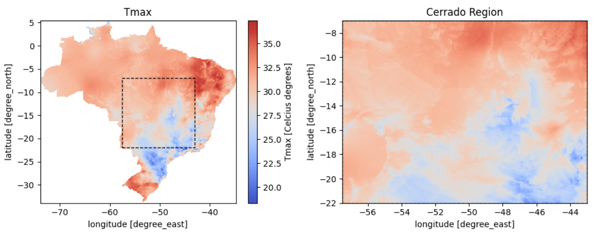
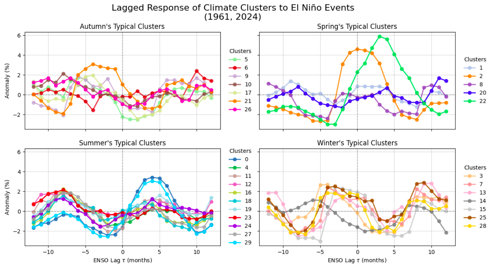

Deep Clustering for Climate: Analyzing Teleconnections through Learned Categorical States
Resumo
Compreender e representar a complexa variabilidade climática é essencial tanto para a análise científica quanto para a modelagem preditiva. Contudo, identificar regimes climáticos relevantes a partir de variáveis brutas representa um desafio, uma vez que estas apresentam elevado nível de ruído e dependências não lineares. Neste trabalho, investigamos o uso de Redes Siamesas Mascaradas (Masked Siamese Networks) para discretizar séries temporais climáticas em agrupamentos (clusters) semanticamente ricos. Com foco nas temperaturas diárias mínima e máxima, demonstramos que as representações obtidas: (i) geram clusters que refletem estados climáticos consistentes sob as premissas do nosso modelo, oferecendo uma representação simplificada para aplicações futuras; (ii) viabilizam a amostragem e a análise de cenários climáticos específicos; e (iii) apresentam associações estatísticas com eventos do fenômeno El Niño, reforçando sua relevância científica. Os resultados alcançados destacam o potencial da discretização autossupervisionada como ferramenta para a análise de dados climáticos, além de abrir caminhos para a incorporação de indicadores climáticos mais abrangentes em trabalhos futuros.


Como citar
@misc{meinhardt2026deepclustering,
title = {Deep Clustering for Climate: Analyzing Teleconnections
through Learned Categorical States},
author = {Meinhardt, Lívia and Oliveira, Dário},
year = {2026},
eprint = {2604.22909},
archivePrefix = {arXiv}
}